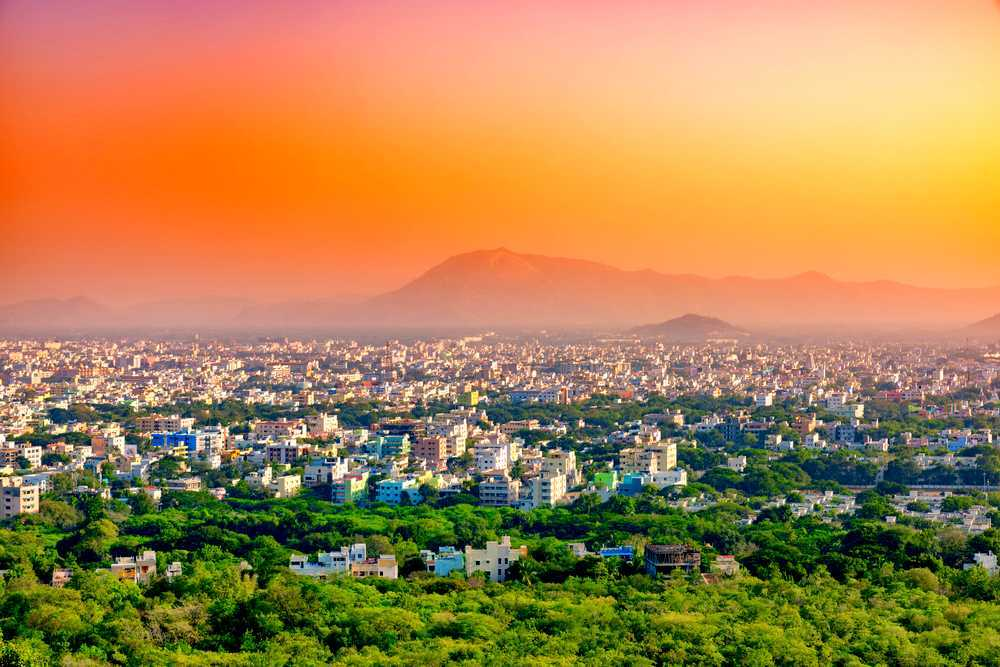

Nellore, also spelt as Nelluru, is a city located on the banks of Penna River,[5] in Nellore district of Andhra Pradesh, India.[6] It serves as the headquarters of the district, as well as Nellore mandal and Nellore revenue division.[7] It is the fourth most populous city in the state. It is at a distance of 279 kilometres (173 mi) from Vijayawada, 660 kilometres (410 mi) from Visakhapatnam, 455 kilometres (283 mi) from Hyderabad and about 170 km (110 mi) north of Chennai, Tamil Nadu and also about 380 km (240 mi) east-northeast of Bangalore, Karnataka. It is the administrative headquarters of Nellore District.
Nellore is a beautiful city lying on the banks of River Penna, a Municipal Corporation in the South Indian state of Andhra Pradesh. Anciently known as Vikrama Simhapuri, it derived its name from "Nelluru", a combination of Tamil words "Nel" and "Ooru" where Nel stands for Paddy and Ooru means Place.
This city, situated on the banks of the Penne River is known for its rich agriculture and has been an exporter of Rice, Sugar cane and cane based products, prawns, shrimps and a varied set of crops. It is the 6th most populous city in Andhra Pradesh, also, holding its position as the administrative headquarter of Sri Potti Sri Ramulu Nellore District. Even though a large percent of its population is rural and dependent on agriculture, it is witnessing an increase in the number of Educational institutions and businesses, helping it gain a new found stature as a city.